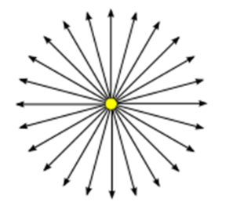

우선 PointLight에 대해 간단히 되짚어 보고자 한다. PointLight는 한국어로 pointlight이라고도 불린다.
빛을 발하는 근원이 기하학적으로 차원이 없는 한 점으로 되어있는 광원을 의미한다.
위의 그림과 같이 점을 중심으로 빛이 뻗어 나가게 되는 형태이다.
위의 렌더링 결과를 보아라. 중심 좌표에 PointLight를 두었을 때, 뒷편의 면에 빛이 어떻게 도달하는지를 나타낸다. 중심부는 밝지만 주변부로 갈수록 어두워진다. 이는 pointlight으로 부터 나온 빛이 면에 도달할 때, 면의 주변부로 갈수록 단위면적당 빛의 수가 감소하기 때문이다.
위는 중앙의 pointlight을 두고, 주위로 8개의 물체를 두었을 때 이다.
각각의 기능에 대해 값을 수정해 가며 그 기능을 어떻게 활용할 수 있는지를 중심으로 보겠다.
three.js : PointLightShadow - Kim Hyeongmo